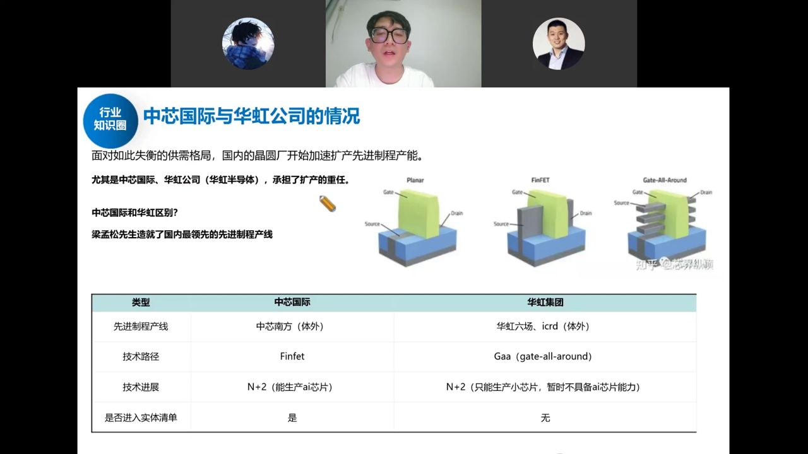
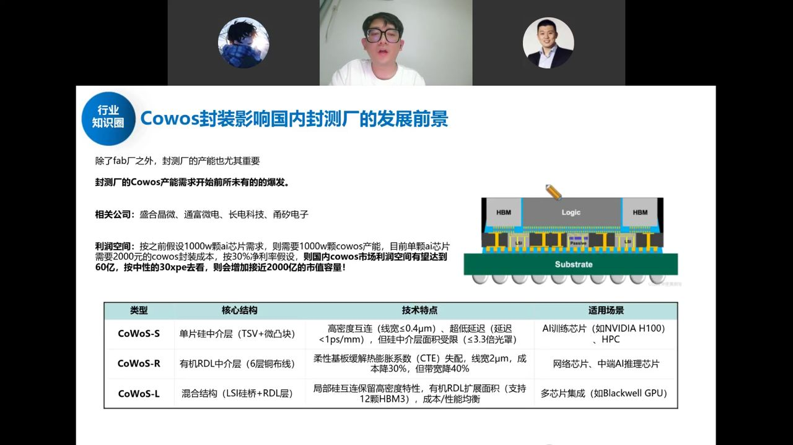
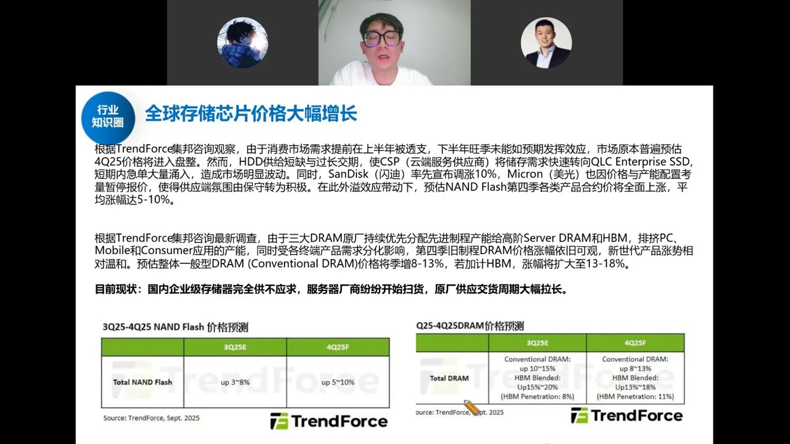

围绕中芯、华虹、长鑫、长存四大晶圆厂，讲清"AI 浪潮下为什么要夺回代工权"： 先进制程（14/7nm）产能严重不足、EUV 被禁只能 DUV 多重曝光以量补质； 中芯与华虹的路线差异、Fab 厂 PB 估值锚、CoWoS 先进封装，以及长鑫长存的存储扩产。
GPU、ASIC 等 AI 芯片（英伟达、寒武纪、海光）最终都要回归到先进制程逻辑电路这个载体。国内外最大的差别不在设计公司，而在代工厂——台积电不给我们做，国内就必须猛扩自己的先进制程，否则 AI 芯片一切白谈。
28nm 及以上算成熟制程，14nm/7nm 算先进制程（门槛 14nm）。中芯代号 N+1≈14nm、N+2≈7nm（早年怕制裁不敢直呼）。
胜负手是光刻机：国内买不到 EUV，只能用原本做成熟制程的 DUV 去硬做先进制程——靠多重曝光堆叠晶体管密度。但每多曝一层良率相乘衰减（一次 90%，两次就 81% 甚至更低），良率根本比不过台积电。良率上不去就以量补质：既然限制英伟达芯片倾销、自己又必须有产能，那就先把产能规模铺起来。
量级测算：8000 亿市场 ÷ 每颗 AI 芯片约 8 万元 ≈ 1000 万颗；一片 12 英寸晶圆按 30% 良率切约 20 颗，需约 50 万片/年（单月 4 万片以上），而目前国内 AI 芯片先进制程产能预计不到 1 万片/月——供需严重错配。每扩 1 万片新制程约需 150 亿投资。还没算 SOC、智驾芯片回流带来的额外需求。
国内基本只有这两家有先进制程，核心区别如下：

这波以华虹为主的 Fab 行情由四点驱动：① 华虹市值约 1500 亿、中芯约 1 万亿（市占率相近、市值差 7–8 倍）的补涨；② 台积电持续新高的美股映射；③ 国内 AI 芯片需求倒逼新智城扩产；④ 8 月停牌收购中芯北方、华虹五厂——这些成熟产线折旧已提完、每年稳定贡献十多亿利润，是"印钞机"，注入意味着后续还有先进制程资产注入预期。
为什么用 PB 不用 PE：先进制程重资产、折旧巨大，短期利润出不来，只能看资产投入产出比。纯成熟制程的联电约 2 倍 PB，先进制程为主的台积电已近 11 倍 PB——Fab 厂估值在 2–11 倍 PB 之间，随先进制程占比提升而上移。当前中芯约 7.5 倍（有芯智城）、华虹约 5.5 倍、华润微/晶合约 3 倍、燕东约 2 倍、芯联约 3.5 倍。终局是中国出一个对标台积电的主体，估值往 11 倍 PB 靠。
AI 芯片都要走 CoWoS（HBM + Logic 中间用 interposer 中介层封装）。海外是台积电自己做，国内拆开：中芯做中间的硅中介层/interposer，整封测交给封测厂（盛合晶微、通富微电、长电科技、甬矽电子，前两家跟华为最近）。

存储核心颗粒就 NAND Flash 和 DRAM：海外美光、海力士、三星，国内长鑫做 DRAM、长存做 NAND。这轮周期前所未有地强（闪迪一个月翻倍、美光涨 60–70%）：

长鑫（DRAM）、长存（NAND）随之扩产；国内利基存储（兆易 NOR Flash 全球第一、普冉、东芯）下游以消费电子为主，跟随主流型周期同步上涨但强度弱。
一句话：算力穿透到底就是晶圆厂（中芯/华虹）+ 封测（CoWoS），再往上是设备；存力围绕长鑫长存的顺周期扩产。胜负手是光刻机，在 EUV 解决前，只能靠扩产能、上量来补良率。